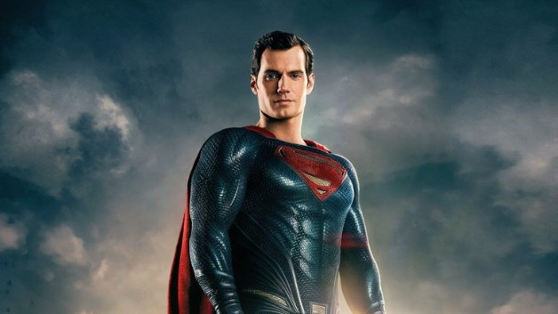

The Flash versus Superman

versus
So, if Flash and Superman were to fight, it would be chaos and devastation, no doubt about it. But, Flash could put the entire world back together in a couple days time while Superman would be groaning on the ground, feeling the hurt. In the comics, Flash and Superman had a battle of speed. In the end of the race, they were having a discussion. Superman said, “I’ve raced you before, Barry. I even won some of those races.” Flash turns to Superman and replies, “Those were for charity, Clark.” and proceeds to disappear in front of the Man of Steel’s eyes. Flash is faster than Superman. Flash is faster than speed itself. Flash is so fast, he can throw a punch 1 billion times in 1 second (or one punch a nanosecond). Flash’s speed is unparalleled, even with Superman trying so hard to keep up with him. Even though Superman can keep up with the Flash’s reaction speed when he is getting dressed or helping a tripping waitress, he is nothing compared to Flash’s top speed of 10 times the speed of light (in fact, Superman’s top speed is approximately 0.011 of the speed of light, or 3.22 million meters/second). Even if Superman can react in 0.01 of a second, Flash can still punch him 10 million times. Not to mention that Superman will be disoriented by all of those punches and not to mention the fact that the Flash’s fists are most likely moving supersonically. Anything that Superman can throw at the Flash, he can just dodge. Since he is the fastest man alive, he can technically dodge anything, and at his top speed, even light will appear frozen to him. That way, he can get behind Superman, and keep punching him, even when he is turning around.
Click one of these buttons to explore this website!